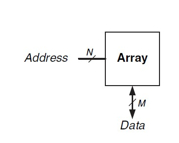
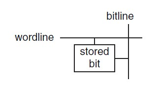
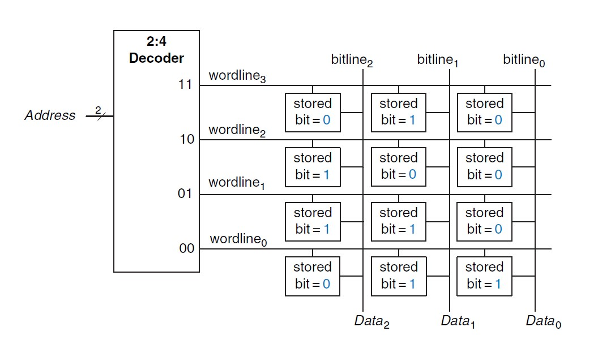
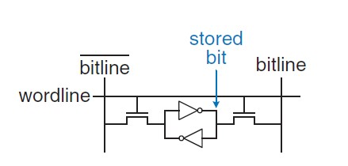
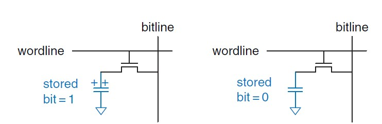
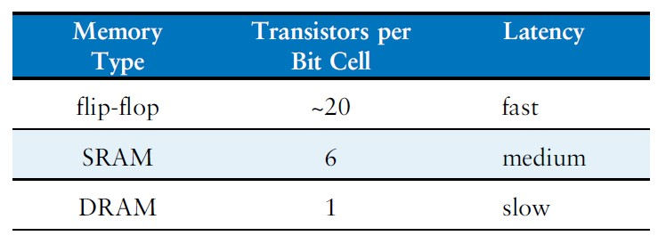
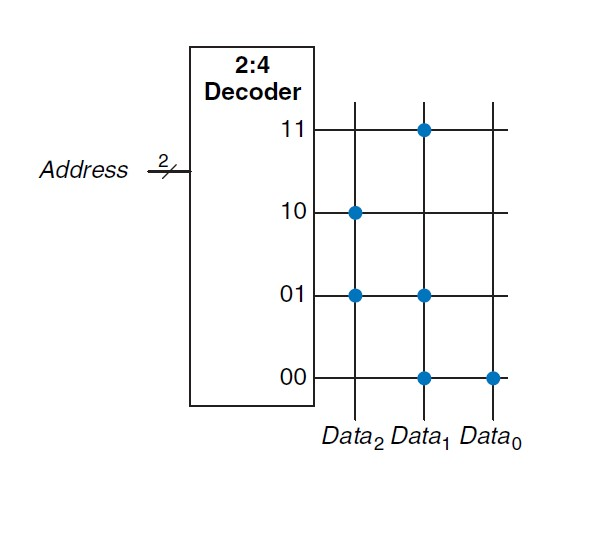
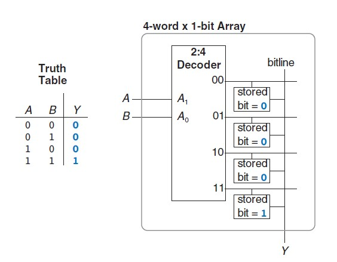

ELO211 Sistemas Digitales
Tópicos Avanzados
Marie González-Inostroza
Memorias
Memorias
Memorias


Acceso a un dato
Organización de memorias
Tipos de Memorias
RAM: Random Access Memory
Se puede cambiar la información. Se borran los datos al apagar el sistema.
ROM: Read Only Memory
No se puede cambiar la infomación.Se mantienen los datos al apagar el sistema
Tipos de RAM
SRAM: Static RAM
Guarda el valor hasta que haya un cambio.
DRAM: Dynamic RAM
Se debe refrescar cada vez que se lee.
Tipos de RAM
SRAM: Static RAM
DRAM: Dynamic RAM
Comparación
En grupos de a 4, discutan:
- ¿Qué tipo de RAM es más rápida?
- ¿Cómo influye el tamaño de la RAM en la velocidad?
- ¿Qué tipo de RAM usa más energía?
- ¿Cómo influye el tamaño en el gasto de energía?
- ¿Qué rol(es) puede tener la RAM en sus proyectos?
Ejemplo de Implementación ROM
EEPROMS: Electrically Erasable Programmable ROMs
Son ROMs hechas para ser reescritas. No se borran al reiniciar el sistema.
LUTs: Look Up Tables
Memorias que implementan alguna lógica.
En grupos de a 4, discutan:
- ¿Qué ejemplos de ROMs conocen?
- ¿Qué rol(es) puede tener la ROM en sus proyectos?
ELO211 Sistemas Digitales
Tópicos Avanzados
Marie González-Inostroza